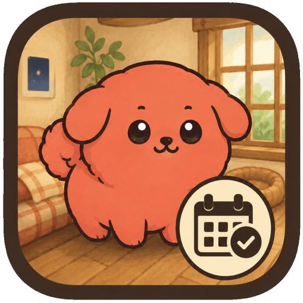

MBTI・ユング心理学 (MBTI & Jung)
Deep Cognition Archive
心理機能やパラメータからMBTI・ソシオ等を高精度で測定。観測実験のように行動ログも記録される、当研究所の原点たる深層認知診断ツール。
診断を実行するClassic Jung 診断
カール・ユングの原典『心理学的タイプ』に基づき、8つの基本的性格タイプを分析。現代類型論の原点となった精神の根源的なエネルギー指向を紐解きます。
原典のタイプを観測するMBTIのモヤモヤ解剖室
類型学への違和感や疑問を論理的に解剖。アンチへの理論武装や、自己防衛のためのメタ認知支援ツール。
解剖を開始する認知機能ダイブ
行動から心理機能を測る、体感型のMBTI測定ツール。新しい観測システムで、あなたの無意識の選択を捉えます。（※スマホはフルスクリーン推奨）
ダイブを開始するNi機能対比問題集
MBTIにおける「内向直観(Ni)」とソシオニクスにおける「Ni」の決定的な違いやニュアンスのズレを解き明かす実践型問題集。あなたの認知の解像度を極限まで高めます。
試験を開始する ソシオニクス (Socionics)
モデルA・ビルダー
ソシオニクスの「モデルA」を自分の手で構築。8つの心理機能をスロットに当てはめ、あなたの真のタイプを論理的に判定します。
研究を開始するGモデル診断：Wonderland G-Tracker
最新理論「モデルG」に基づく行動観察型診断。不思議の国のギミックを通し、回答速度・精度・エネルギー出力を多角的に分析し、あなたの「社会的使命」を観測します。
不思議の国で観測するDCNH診断：DCNH-Chronos-Protocol
サブタイプ理論「DCNH」に基づき、あなたに宿る4つの役割エネルギー（支配・創造・規範・調和）の比率をリアルタイム計測。自認タイプと掛け合わせて社会的役割を解き明かします。
プロトコルを起動するソシオTi強度チェッカー
内的論理（Ti）に特化した精密測定ツール。あなたのTiの強度を0〜100で数値化し、主導・補助・規範・脆弱など、8つのポジションから論理的に判定します。
論理強度を測定するソシオニクス脆弱診断：Cafe PoLR
第4機能「脆弱な機能（PoLR）」に焦点を当てたカフェ風の自己分析。あなたが最もストレスを感じやすく、アキレス腱となる弱点の現れ方を穏やかに観測・解剖します。
カフェに入店するソシオJ/Pねじれ診断：J/P Paradox
MBTIとソシオニクスにおける「J/Pの逆転現象」と認知のねじれを徹底解剖。内向型・外向型の情報代謝プロセスから、真の機能配置を観測する精密分析プロトコル。
パラドックスを解剖する二分法診断：11-Traits
ソシオニクスの二分法特性（11のDichotomies）を多角的に分析・測定。多面的な二項対立のパラメータから、あなたの認知の偏りと情報代謝の構造を立体的に浮き彫りにします。
二分法を測定する エニアグラム (Enneagram)
Astral City：ホーナイ×ハーモニクス診断
エニアグラムの「ホーナイ（社会的スタイル）」と「ハーモニクス（問題解決スタイル）」の2大グループ理論を交差分析。3×3のマトリクスから深層タイプを導き出します。
アストラル都市へ入場するNightscape Tritype
夜景を完成させながら、あなたの「本質」を紐解くトライタイプ＆生得本能（sp/so/sx）測定ツール。星が導く光のラインからあなたの真の輪郭を描き出します。
夜空を見上げるひみつのねじれ診断 - Secret Book
エニアグラムをベースに、無意識に張る「ウィング」と心の奥底に沈めた「最深の欲求」を計測。心の中で起こっている矛盾（ねじれ）を暴き出す秘密の診断。
ひみつの本を開く 関係性・恋愛 (Relationship)
恋愛4タイプ診断 (Romance Style)
ソシオニクスの理論に基づき、あなたの恋愛傾向を「侵略者・犠牲者・子ども・保護者」に分類。深層心理に眠る愛の形を解き明かします。
愛の形を観測する理想のソシオ恋愛診断
あなたが魂レベルで求めている「理想のパートナー」を観測。4つのスタイルから理想の相手を抽出し、真に補完関係にあるソシオタイプを算出します。
理想のタイプを観測するTwin Mirror / 準同一・双子診断
自認タイプから鏡合わせとなる「準同一関係」を導き出します。同じ景色を見つめながら違う答えへたどり着く「もう一人のあなた」の姿を映し出す観測ツール。
鏡の裏側を観測するReverse Mirror / 監督関係・反転鏡
ソシオニクスの「監督関係」に焦点を当てた関係性観測ツール。N/Sの知覚波長を共有しながら他が反転することで生まれる非対称な力学の深層を解き明かします。
反転鏡を観測する 精神・気質・愛 (Psyche & Temperament)
AP診断 (Attitudinal Psyche)
サイコソフィア理論に基づき、意志、論理、感情、物理の4つのアスペクトからあなたの「精神の配置」を分析し、葛藤と強みのあり方を暴き出します。
精神を測定するテンポリスティック診断
時間（過去・現在・未来・永遠）に対する関係性と優先順位を測定するロシア発の類型論。あなたがどのように時間と向き合っているのかを紐解きます。
時間軸を観測するアマトリカ診断 (Amatorica Letter)
エロス、アガペー、フィリア等の古典的な愛の概念に、分析（Analita）や征服（Victoria）などを加えた「10種類の愛の形」を精密測定するカラーレター型診断。
手紙を開封する道徳アライメント診断
「秩序・社会・中立・反抗・混沌」×「善・道徳・中立・不純・悪」の5×5グリッドから、無意識下で準拠している「行動規範（25種のアライメント）」を暴き出すシミュレーター。
属性を観測するTCI Temperament Lab
クロニンジャーの気質・性格検査（TCI）に基づく、脳科学に根ざした診断。遺伝的気質と精神的発達から生物学的OSを解析します。
気質を観測する コミュニティ・ゲーム (Experimental)
ナイトタワー診断：Night Tower
真夜中の8階建てタワー。各フロアの住人が仕掛ける「理不尽ミニゲーム」への対処から、最上階で「あなたの正体」を導き出す行動観察型シミュレーター。
タワーへ潜入するダーリンちゃんの煽り耐性診断
Feインターフェースの🥺ダーリンちゃんとLSI芋虫🐛があなたを翻弄！シュールで高度な揺さぶりを耐え抜き、メンタル防御力を判定するゲーム型診断。
煽りに耐えてみる思考暴走シミュレーター
内的論理(Ti/Ni)が暴走し、思考のループから抜け出せなくなる体験ツール。LII/INTJの脳内メモリの限界を追体験せよ。
ループに入場するLSI芋虫育成シミュレーター
ソシオニクスの「LSI」をモチーフにした不条理育成シミュレーター。エサやり進化、規律訓練ミニゲーム、ILI占拠イベントなどカオスで緻密なLSIの世界観を体験。
芋虫を育成する夢コード - Dream Code
夢の世界に迷い込み、16タイプの心理機能の偏りを突いてくるAIキャラクターたちと戦う探索型アドベンチャー。行動ログから導き出される夢コードを手に入れろ！
夢の世界へ接続するしつもん工房
誰もが自由に診断、クイズ、アンケート、ガチャを設計・共有できるプラットフォーム。独自の心理分析アルゴリズムをWebプロダクト化できる観測サンドボックス。
ラボで設計を開始する その他 (Others)
創作16タイプ診断
創作活動における「情報代謝の癖」を16タイプで分析。あなたの脳がどのように物語を生成し、どのような表現スタイルを得意とするのかを解き明かす創作者のための診断。
脳内ログを解析するCRYSTAL ORIGIN
直感のままに「光」を探す行動から、あなたの内なる原石を鑑定するシミュレーター。質問回答を一切挟まず、無意識の選択から深層心理を紐解きます。
原石を観測するおやつ16タイプ診断
甘さ・食感・温度・和洋の4軸から、あなたの「おやつ性格」を判定！16種類の可愛いキャラ判定と楽天API連携によって最適なスイーツをレコメンドします。
おやつを鑑定するWAIS風IQトレーニング
ウェクスラー成人知能検査（WAIS）をモチーフにした本格的な認知機能トレーニングツール。言語理解や処理速度にアプローチするパズルで脳の限界を観測します。
トレーニングを開始するChroma Log / 深層心理カラー診断
約1658万色の中から、あなたの現在の精神状態を象徴する「唯一無二の色」を抽出。無意識の色彩選択から情報代謝を逆算する、次世代のカラー観測エディタ。
カラーを観測する
Botanical Fleur / 誕生花・花言葉
366日の誕生花と花言葉から、生まれた日の象徴やキャラクターの深層シンボルを紐解くボタニカルアーカイブ。
植物の持つメタファーから、あなた自身の本質や創作における心理的モチーフを静かに観測・探求します。
花言葉を観測する
Color Seasons
生まれ持った肌・瞳・髪のトーンから、あなたと真に調和する「4つの季節のカラーグループ」を判定。色彩調和理論に基づきカラーパレットを導き出します。
シーズンカラーを観測する類型自認カードメーカー
MBTI、ソシオニクス、エニアグラムなど、あなたの複雑な自認タイプを1枚の美しい「カード画像」にデザインして出力するジェネレーター。
カードを作成するうちかた標本
あなたが文章を紡ぐ「タイピングの過程（リズム、修正行動、句読点や装飾）」を観測。無意識の打ち方の癖から文章作成の性質を解剖します。
標本を記録する
闇観測実験アーカイブ
入力の「迷い」までが観測対象。あなたの心の奥底に眠る「闇」の属性を暴き出す、本格的な観測実験です。
深淵を覗く
Mobile Apps (スマホアプリ)

Pet Reminder (Android)
当研究所の技術の結晶たる、初のネイティブAndroidアプリ。
行動心理と習慣化のロジックを可愛いUIに落とし込んだ、モバイル向けのリマインダーシステムです。
インストール